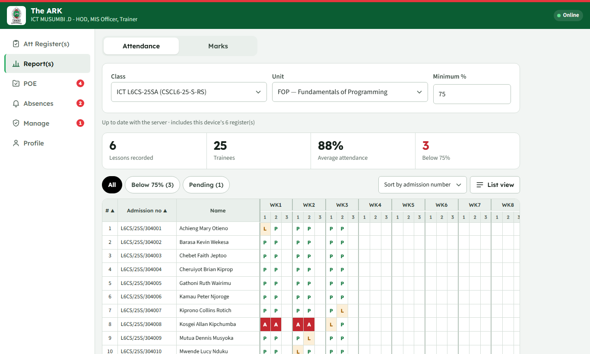

Registers in seconds
Pick the lesson on the weekly timetable and tap through the class. Doubles, CATs and lunch-hour sessions are handled, and the register is saved on the phone straight away.
The ARK is the department's Academic Records Keeper. Trainers mark attendance and enter marks on their phones, students check in and send their POE evidence, and the HOD and MIS Officer see it all, even when there is no network.
Works offlineMark registers with no network
Any phoneNothing to buy, nothing to install from a store
Official layoutsClass register and marksheet, ready in Excel
Free to runOn the college's own free accounts
From the first lesson of the term to the HOD's approval, The ARK replaces paper registers, lost CAT scripts and end-of-term spreadsheets.
Pick the lesson on the weekly timetable and tap through the class. Doubles, CATs and lunch-hour sessions are handled, and the register is saved on the phone straight away.
Show a lesson QR code that changes every 20 seconds, or scan students' ID cards. Everyone starts absent; each scan marks a student present. No proxy check-ins.
Students photograph their marked CATs and practicals like a document scanner. The PDF goes to their own college Google Drive and is shared with their trainer to approve or return.
One marksheet per unit for its whole life, across terms. Earlier terms lock on their own; the HOD can unlock a correction.
The 12-week register with hours and percentages builds itself. Export the official Excel layout or a PDF, and submit it to the HOD for approval.
The HOD sees every class at a glance: lessons marked against lessons due, attendance rates, students missing too many lessons, and registers waiting for approval.
A normal day, from the first lesson to the HOD's desk.
On the timetable, on their phone. It works in the lab, in the workshop, or with no network at all.
They scan the lesson QR code, or the trainer scans their ID cards. Late and excused are one tap.
Students scan their marked CATs; the trainer previews each one, approves it or sends it back with a note.
Term registers, marksheets, absences and approvals, with copies of approved evidence kept safe.
Large buttons, clear wording, and nothing to learn twice.



Each person sees what they need, and nothing they shouldn't.
Registers wait safely on the phone until there is network, and two phones of the same trainer never overwrite each other.
Staff sign in with a staff code and PIN; students' evidence lives in their college Google accounts. Each student phone is tied to one student.
Approved evidence is copied into the department's archive on a schedule, and a document changed after it was sent is flagged.
Tested with over a thousand students checking in at the same lesson start, on the college's free accounts.
The demo is a full copy of The ARK with invented classes and students. Sign in as a trainer, or set up a phone as a student, and try everything.